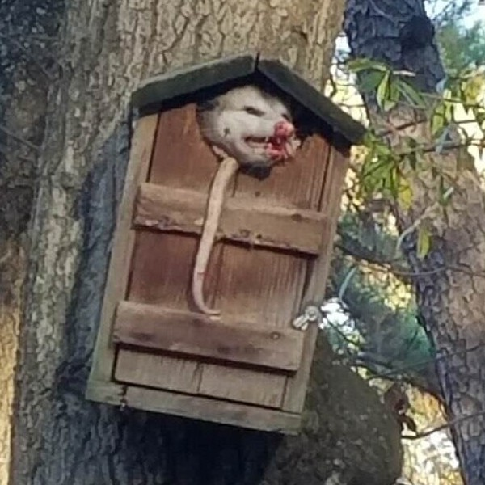

| File type | Lossy/Lossless | Supports alpha channel | Widely supported | Can be used for animation |
|---|---|---|---|---|
| JPEG | Lossy | No | Yes | No |
| GIF | Lossless (with limited colors) | Yes | Yes | Yes |
| PNG | Lossless | Yes | Yes | No |
| SVG | Lossless | Yes | Yes | Yes (via SMIL or CSS) |
| WEBP | Both (can be lossy or lossless) | Yes | Increasingly supported | Yes |
PNG would be the best for general purpose since it is lossless, supports alpha channels, and has a full RGB colour palette
